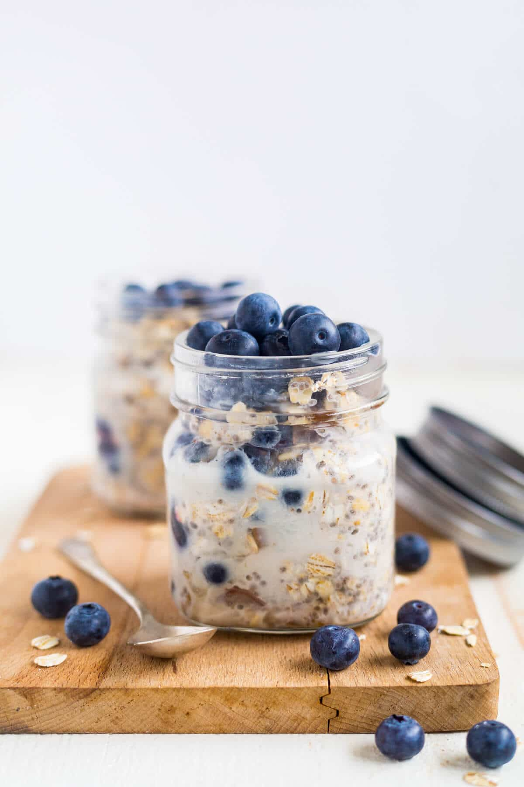

Overnight Oats

Description
This hearty breakfast recipe is easy to prep overnight and
will be a great jumpstart to your day!
Ingredients
- 1/2 cup old-fashioned oats
- 1/2 cup milk
- 1 scoop vanilla protein powder
- 1 Tbsp plain greek yogurt
- 1 Tbsp honey
- 1 handful blueberries
Steps
-
Combine all ingredients in a sealable jar and mix well.
-
Place jar in refrigerator for at least 8 hours and up
to 3 days.
-
Remove from fridge and eat oats directly from jar.